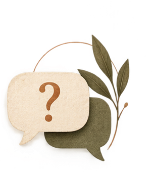

Mentoria em
Escrita Acadêmica
Quando a pesquisa existe, mas a escrita não avança.
Orientação individualizada para superar bloqueios, organizar o raciocínio, estruturar argumentos e desenvolver o trabalho com autonomia intelectual.
SUA PESQUISA. SUA VOZ. NOSSA REVISÃO.
Revisão, mentoria e acompanhamento acadêmico para quem deseja desenvolver uma escrita mais clara, consistente e autenticamente sua.
A escrita acadêmica não nasce de fórmulas. Nasce de perguntas, inquietações, leituras e descobertas.
A inteligência artificial pode auxiliar processos, mas não deve substituir o pensamento crítico, a reflexão ou a voz de quem pesquisa.
Na Essência Acadêmica, revisar não é reescrever alguém. É cuidar da linguagem para que as ideias se expressem com clareza, rigor e autenticidade.
Preservar a essência é respeitar o percurso intelectual de cada autor: aquilo que pensa, investiga e tem a dizer.
A tecnologia pode apoiar a escrita.
A essência continua sendo humana.
Entre o que você pensa e o que consegue escrever, existe um caminho. Nós ajudamos você a percorrê-lo.
Quando a pesquisa existe, mas a escrita não avança.
Orientação individualizada para superar bloqueios, organizar o raciocínio, estruturar argumentos e desenvolver o trabalho com autonomia intelectual.
Transformar pensamentos em palavras também é parte da pesquisa.
Conversas orientadas e estratégias de escrita para construir a ponte entre o que você pensa e o que deseja comunicar.
Não escrevemos por você. Ajudamos você a encontrar sua própria forma de escrever.
Originalidade também se constrói com responsabilidade.
Identificação de trechos que merecem atenção em citações, paráfrases e referências. Similaridade textual não comprova, por si só, plágio.
Sua voz, com mais clareza e precisão.
Revisão ortográfica, gramatical e textual, com atenção à coesão, coerência, fluidez e adequação acadêmica, preservando seu estilo e autoria.
O rigor também está nos detalhes.
Adequação à ABNT ou às diretrizes institucionais: estrutura, citações, referências e apresentação formal do documento.
Critério, escuta e atenção a cada detalhe — sem fórmulas prontas.
Entendemos seu trabalho, seus objetivos e o que está dificultando o avanço.
Definimos juntos o escopo, os prazos e a melhor forma de acompanhamento.
Trabalhamos clareza, estrutura e rigor, com orientações transparentes.
Você continua sendo autor das ideias e responsável pelas decisões sobre o texto.
Advogada e profissional dedicada à linguagem, à escrita e à construção do conhecimento. A Essência Acadêmica nasce da convicção de que uma boa revisão deve fortalecer o texto sem apagar a pessoa que o escreveu.
Uma atuação pautada pelo cuidado com a palavra, pelo rigor acadêmico e pelo respeito à autoria.
Converse sobre seu trabalho ↗
05 / DÚVIDAS FREQUENTESAs respostas mais importantes, antes mesmo da nossa primeira conversa.
Não. Acompanhamos o desenvolvimento da escrita e revisamos textos, sempre preservando sua autoria e autonomia intelectual.
Não. A avaliação e aprovação dependem da instituição e de seus critérios. Nosso compromisso é com a qualidade e o rigor do serviço contratado.
Não oferecemos estratégias para burlar detectores. Orientamos o uso responsável de fontes, citações e ferramentas, fortalecendo a integridade acadêmica.
O orçamento considera tipo de trabalho, extensão, prazo e serviço solicitado.
Não. Podemos conversar primeiro para entender sua necessidade e definir os próximos passos.
Artigos, TCCs, monografias, projetos, dissertações e outros textos acadêmicos, conforme a demanda e o escopo combinado.
VAMOS CONVERSAR?
Conte em que etapa está e como podemos ajudar. Você receberá uma mensagem pronta para enviar pelo WhatsApp.
Prefere falar diretamente? WhatsApp ↗